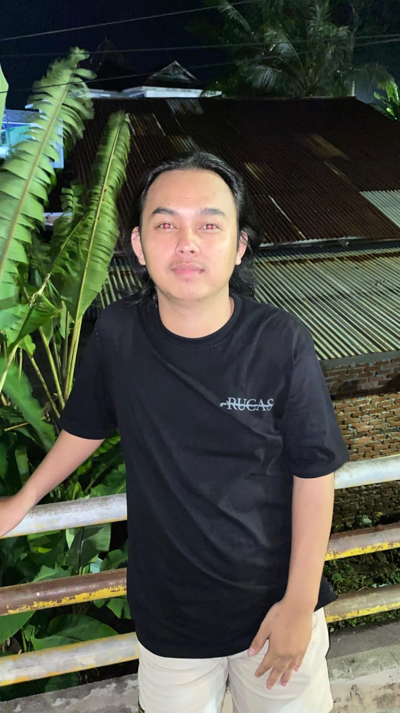
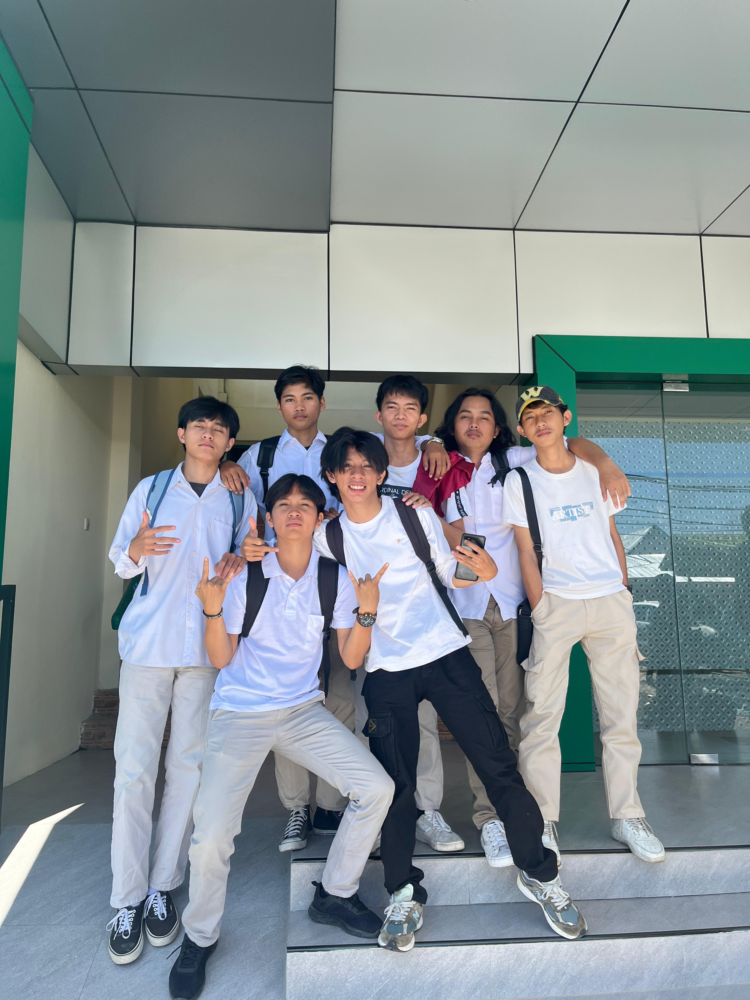

Tentang Kami
Kami adalah perpustakaan digital modern yang berkomitmen untuk menyediakan akses mudah ke pengetahuan dan literatur bagi semua orang. Dengan koleksi yang luas dan beragam, kami berusaha untuk memenuhi kebutuhan informasi masyarakat.
- Visi: Menciptakan masyarakat yang melek literasi dan berpengetahuan luas melalui teknologi modern.
- Misi:
- Menyediakan koleksi digital yang berkualitas.
- Memberikan layanan konsultasi dan pelatihan.
- Mempermudah akses informasi kapan saja dan di mana saja.

Dibuat oleh:

RAHMAN AL PADJRI
Pembuat dan pengembang utama

PERJAKA UMB
Kontributor